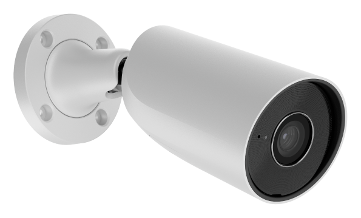
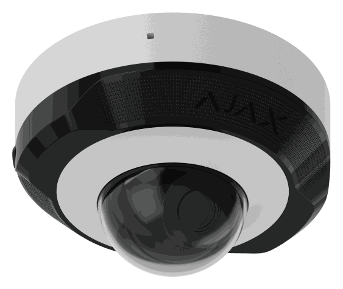

Caméras
BulletCam, TurretCam et DomeCam Mini, en infrarouge ou en éclairage hybride (HL). Les versions HLVF ajoutent un objectif varifocal motorisé de 2,8–12 mm, l’éclairage hybride, le True WDR et des entrées/sorties audio et alarme.
Vidéosurveillance
Ajax présente deux lignes de vidéosurveillance : Baseline et Superior. Les deux intègrent une intelligence artificielle qui reconnaît les personnes, les véhicules et les animaux, et peut déclencher l’alarme.
Commun aux deux lignes
Sur Baseline comme sur Superior, l’intelligence artificielle est intégrée aux caméras. Elle distingue les personnes, les véhicules et les animaux, et peut déclencher l’alarme. Ce n’est pas une option réservée à Superior.
Sources : catalogue Baseline et catalogue Superior, ajax.systems.
Caméras, sonnette et enregistreurs pour la maison et les petits sites. L’IA intégrée reconnaît les personnes, les véhicules et les animaux et peut déclencher l’alarme.
Ajax indique, sur son catalogue Baseline, un matériel conforme NDAA.
BulletCam, TurretCam et DomeCam Mini, en infrarouge ou en éclairage hybride (HL). Les versions HLVF ajoutent un objectif varifocal motorisé de 2,8–12 mm, l’éclairage hybride, le True WDR et des entrées/sorties audio et alarme.
IndoorCam (Wi-Fi) et DoorBell. Même application Ajax que l’alarme, la même reconnaissance personnes, véhicules et animaux.
NVR, NVR H et NVR H2D. L’alimentation 12 V pour NVR complète l’installation lorsque le site le demande.
« Leurs fonctionnalités fondamentales sont sublimées par une qualité visuelle exceptionnelle, une intelligence artificielle enrichie, et un éventail d’options élargi. » La reconnaissance personnes, véhicules et animaux, et le déclenchement de l’alarme, restent ceux de la ligne Baseline : l’IA enrichie s’y ajoute, elle ne les remplace pas.
Superior BulletCam, DomeCam et TurretCam HLVF : objectif varifocal motorisé P-Iris de 2,8–12 mm, éclairage hybride, True WDR, microphone et haut-parleur, entrées et sorties audio et alarme, PoE ou 12 V.
Superior NVR H2D, doté d’IA : HDMI 4K, deux disques remplaçables à chaud, ports PoE ou double Gigabit selon le modèle, de 8 à 32 canaux.
Sites professionnels et projets ambitieux. Active Sécurité 974 est partenaire agréé Ajax Systems.
Ce qui change
| Baseline | Superior | |
|---|---|---|
| IA personnes, véhicules, animaux | Oui, intégrée. Peut déclencher l’alarme. | Oui, la même base, avec une IA enrichie. |
| Caméras | BulletCam, TurretCam, DomeCam Mini, versions IR, HL et HLVF. IndoorCam, DoorBell. | Superior BulletCam, DomeCam et TurretCam HLVF. |
| Objectif | Fixe sur IR et HL. Varifocal motorisé 2,8–12 mm sur HLVF. | Varifocal motorisé P-Iris 2,8–12 mm. |
| Nuit et audio | Infrarouge, ou couleur avec l’éclairage hybride (HL / HLVF). Microphone. | Éclairage hybride, microphone et haut-parleur. |
| Enregistreurs | NVR, NVR H, NVR H2D. | Superior NVR H2D, HDMI 4K, deux disques, IA. |
Baseline




Superior


Étude chez vous, sur toute l’île. Baseline ou Superior, selon le site.